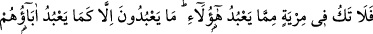
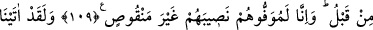
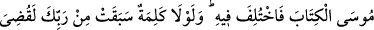
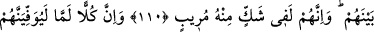
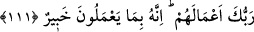
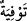

ATALARI TAKLİD
109. O halde onların tapmakta oldukları şeylerden (onların bâtıl olduğundan) hiç
şüphen olmasın. Onlar ancak daha önce atalarının taptığı gibi tapıyorlar. Biz onların
(azaptan) paylarını mutlaka eksiksiz olarak vereceğiz.
110. “Andolsun biz Musa’ya Kitab’ı verdik, fakat onda ihtilafa düşüldü. Eğer
Rabb’inden bir söz geçmemiş olsaydı elbette onların arasında hüküm verilmişti (ve
işleri bitirilmişti). Şüphesiz ki onlar da (Mekkeliler de) Kur’an hakkında derin bir
şüphe içindedirler.”
111. “Şüphesiz Rabb’in, onların her birinin amellerinin karşılığını tam olarak
verecektir. Çünkü O, onların yapmakta olduklarından haberdardır.”
“O halde” anlattığım bu öncekilerin kıssaları ve kötü âkıbetleri sana mâlum olduğuna
göre artık “onların” müşriklerin “tapmakta oldukları şeylerden”; onların bâtıl
olduğundan “hiç şüphen olmasın.” Bu tapınmanın âkıbeti kötü bir dalâlet olduğuna
kesin olarak inan.
Sanki “Neden şüphe içinde olmayayım?” diye bir soru sorulmuş, cevaben de şöyle
denilmiştir: Çünkü “onlar ancak daha önce atalarının taptığı gibi tapıyorlar.” Yani
onların hâli de atalarınınkinden farksızdır. Onlar da hak ve araştırma üzere değil, bâtıl
ve taklid üzeredirler. Burada putlara tapan ehl-i fetretin de cehennemlik olduğuna bir
işaret vardır. Çünkü âyetteki kötüleme, bunu çağrıştırıyor.
“Biz onların” bahsi geçen kâfirlerin azaptan “paylarını mutlaka eksiksiz olarak
vereceğiz.” “__WORD__” bir şeyi tam olarak ödemek ve vermek demektir. Yani, atalarının
suçlarına göre takdir buyurduğumuz paylarını tam olarak verdiğimiz gibi bunlar için
belirlediğimiz onların dünyevî ve uhrevî azablarını da tam olarak vereceğiz. Böylece
atalarının başına gelenler bunların da başına gelecektir. Çünkü sebeplerin benzeşmesi,
sonuçların da benzeşmesini gerektirir.
Şayet: ‘Bize göre, Allah’tan başka hiçbir sebep yoktur’ denirse, şöyle cevap veririz:
Bizim için normal sebebiyet yeterlidir. Bu sebebiyet ise bir şeyin normal olarak
devamlı o şekilde gerçekleşmesi mânâsındaki sebepliliktir.